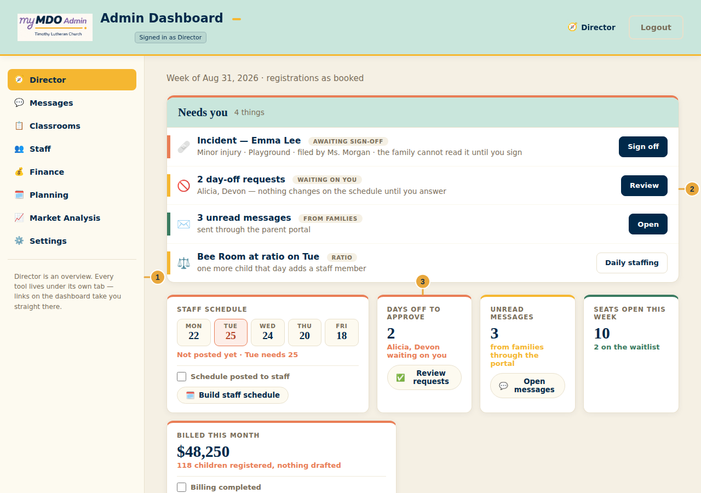
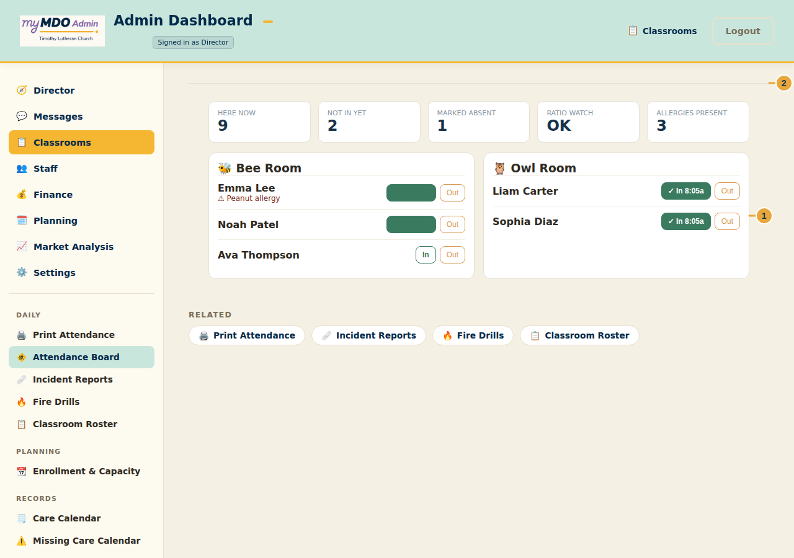
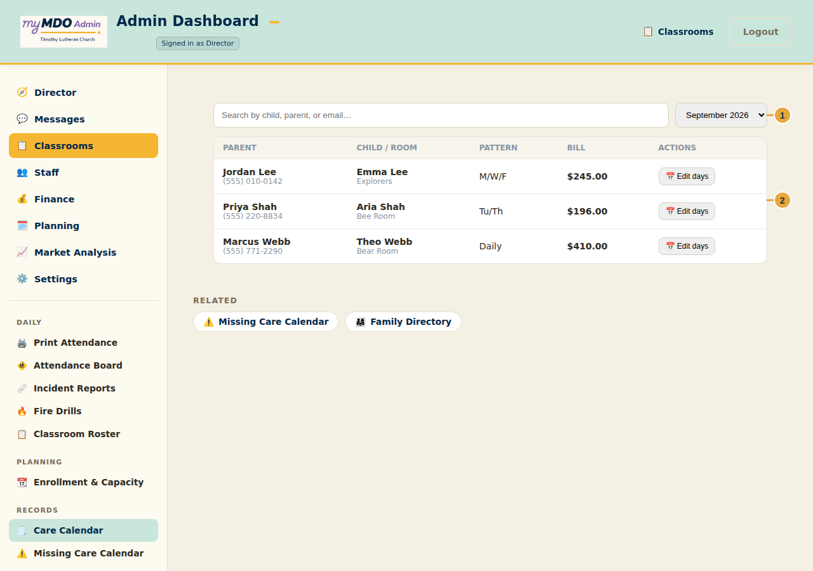

Director, Classrooms, Staff, Finance, Planning, Market Analysis, and Settings
September 2026 · v1
Sign in at mdo.timothystl.org/admin.html
Sample data only. The names, schedules, and dollar figures in these screenshots
are fictional demo data, generated for this guide — not real families, staff, or finances.
Timothy Lutheran Church — Mother's Day Out
6704 Fyler Ave, St. Louis, MO 63139 · (314) 781-8673 · mdo@timothystl.org
Start here — the portal shell
Where to go. The Admin Portal lives at
mdo.timothystl.org/admin.html. It's a
full desktop experience — a laptop or tablet in landscape is the best fit, though a phone works too.
The admin portal has seven tabs down the left sidebar: Director,
Classrooms, Staff, Finance, Planning,
Market Analysis, and Settings. Below 900px screen width the sidebar
becomes a hamburger menu with the same seven tabs inside.
Each tab works the same two-level way:
Dashboard — the tab's landing view: key numbers, a "Needs you" action queue,
and shortcut pills into the tools that explain those numbers. This is what you land on every
time you open a tab.
Detail — a specific tool, open and in focus. The sidebar stays visible and
highlights where you are, with a Related row of nearby tools at the bottom —
there's no separate "back" button because the sidebar always shows the way out.
Director owns no tools of its own. It's a pure dashboard — every link on it opens
the real tool under its actual home tab, so the sidebar always shows you where a thing actually
lives rather than keeping a second index to remember.
Enter your admin email and password, then tap
Login.
Use Forgot password? if needed — a reset link is emailed to your account.
Admin accounts are created and role-assigned by the director, not self-registered. Ask the
director for an account if you don't have one yet.
The Director dashboard

Director dashboard: the "Needs you" queue and the week's key numbers
The Needs you panel at the top is a single action queue — day-off requests,
incident reports awaiting your sign-off, unread messages, and staffing warnings all land here,
most urgent first. Each row has its own inline button, so you can clear it without leaving the
page.
Below that, the metric cards show the week at a glance: the staff schedule by
day, days off waiting on you, unread messages, seats open this week, and what's billed so far
this month.
Tap any card's link (for example Build staff schedule or Review and
send) to jump straight into the tool that explains that number.
Further down, Staff needed this week and How full each room is
summarize the classroom picture, and Next up on the waitlist shows who's
waiting.
These are the same numbers everywhere else in the app. The dashboard never
computes a figure of its own — it reads the exact same registrations, invoices, and schedules the
detail tools use, so the numbers here and the numbers in a tool can never disagree.
Classrooms — Attendance Board

Attendance Board: office view of who's checked in, by room
From the sidebar, open Classrooms → Daily → Attendance Board.
The summary tiles at the top show who's here now, who hasn't arrived, who's marked absent, and
whether any room is at its staff-to-child ratio limit.
Each room card lists its children with In / Out buttons and an
allergy flag where one applies. This mirrors the same check-in record the classroom's own Staff
app writes — marking a child here or on a teacher's phone updates the same record either way.
Use Move → on a child's row to move them to a different room for the day.
The other Classrooms tools follow the same "office view of a real staff workflow" pattern:
Incident Reports and Fire Drills let the director file a report or
log a drill directly, in addition to reading what staff filed from the floor.
Care Calendar & registrations

Care Calendar: every family's registration, searchable and editable
Open Classrooms → Records → Care Calendar for the full list of registrations —
search by child, parent, or email, and filter by month.
Each row shows the parent's contact info, the child and room, a computed pattern
summary (which weekdays are booked), and the current bill.
Use Edit days to open a child's calendar and add or remove care days. Billing
recomputes automatically from the child's real registered days — there's no separate "add a
charge" step to keep in sync.
Missing Care Calendar, right next to Care Calendar in the sidebar, flags children
whose registered pattern doesn't match what's actually been booked for the upcoming month — useful
for catching a family who forgot to register before the month starts.
Build Staff Schedule is the weekly room/shift grid, with a By-worker view and the
week's staffing requirement side by side. Staff Roster holds the team directory.
Payroll covers pay periods, PTO policy, and time-clock settings. HR &
Handbook holds policies, write-ups, and staff injury reports.
Finance
The Bookkeeper tab is the single source for money: an Overview with the annual
budget and year-over-year comparison, Accounts Receivable, Room P&L, Month-End Close,
Reconciliation, and a GL Export. Invoices is where a drafted bill actually gets
issued — Email invoices sends it and starts aging it as receivable; Mark sent (no
email) does the same when a bill went out another way.
An invoice sitting in draft is not yet a bill. The Accounts Receivable "owed"
figure only counts invoices that have actually been sent — review and send drafted invoices
regularly so the numbers the office sees match what families have actually been shown.
Planning
Enrollment outlook, room capacity modeling, and What-If scenario/enrollment planning tools live
here — useful for a rate change or a "what if we opened a new room" question.
Market Analysis
Compares local market position, pricing, and cost context — full-role access only.
Settings
Room rates and capacity, registration rules, closures, admin roles and access, enrollment forms,
provider tax details for the year-end statement, and the ChMS finance API connection all live under
Settings as one continuous page — there's intentionally no second sidebar level inside it.
Admin roles & access
Every admin account has one of three access levels:
full — unrestricted access to every tab and tool.
restricted — day-to-day scheduling and classroom tools, without Finance,
Payroll, Staff Roster, or the more sensitive Settings sections.
staff — Classrooms tab only, and read-only there.
Roles are managed under Settings → Access & oversight. If a tool you expect
to see is missing from the sidebar, check your assigned role there before assuming something is
broken.
Admin quick reference
I need to…
Go to
See what needs my attention today
Director dashboard
Check who's checked in right now
Classrooms → Attendance Board
Add or change a family's care days
Classrooms → Care Calendar → Edit days
Approve a staff day-off request
Director dashboard, or Staff → Build Staff Schedule